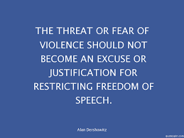
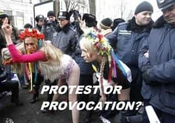
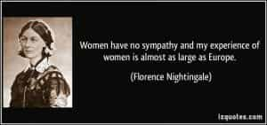

< < < Back
When Women Abuse Authority To Commit Violence – Return Of Kings
Last week, a piece of world news grabbed media attention when, on the streets of the capital in unrest-torn Burundi, officers clashed with dozens of rioters who had taken to the street to demonstrate against President Pierre Nkurunziza’s controversial bid for a third term in office.
A female police officer had shot at unarmed protesters at point-blank range with a Kalashnikov during those protests in Burundi.
The video footage showed the female officer looking agitated as she and her fellow officers slowly moved towards the rioters, who stood pressed against a brick wall. Moments later a brief scuffle between one of her colleagues and a rioter led to her inexplicably shooting at the unarmed man from no more than ten feet.

And just seconds after the shots were fired, the policewoman was punched, kicked, and dragged along the streets of Bujumbura by a furious mob who managed to separate her from her colleagues. However, the female officer’s colleagues eventually managed to get between her and her attackers, enabling her to flee to safety with only minor injuries.
Considering the size of the mob and their crazed nature (they even stuck a dead owl to a stick to mock the ruling party) one wonders at the logic of the female officer’s decision to open fire on the unarmed protester—which only served to further ignite the mob’s fury and already volatile situation.
And, at the same time, the thought which came to mind looking at the pictures in which she was dragged away to safety by her male colleagues was that: eggs are precious, sperms are dispensable—even in that part of the world, no matter how unjustified and stupid the actions of those eggs might have been.
Meanwhile, the story was sensationalized for the “harrowing” images of how the policewoman was kicked, punched, and nearly killed. But the looming questions remain: was her attack justified to begin with? What was she thinking when she inexplicably pulled the trigger on the unarmed protester? Do women understand the difference between a protest and a provocation?

What would have been the public reaction if this instead had occurred in the backdrop of our modern societies? Would our societies then be instead apologetically defending the female officer in question, and further demonizing the unarmed protester?
With the increasing globalization of modern social constructs like feminism into underdeveloped parts of the world, the problem intensifies even further when authority is invested into the hands of women who would be unknowingly and blindly following the footsteps of their feminist and deluded sisters of modern societies.
While it could be argued by some that the guilty female officer was probably not so “intellectually or emotionally developed” for her inexplicable decision, as compared to her “intelligent” modernized sisters in developed societies, the real problem remains unaddressed: that the feminist ideology of investing equal authority to women (wherever they may be) is ridiculously erroneous, especially in law enforcement.
It would also be erroneous to accept the hypocritical reasoning that such women who abuse power were only following “orders,” and thus were guiltless. True equality cannot exist because of this hypocrisy—and if men are vilified for unprovoked violence, then women should also be judged for unjustified violence (which usually rarely happens). But the hypocrisy extends to others aspects of contemporary life globally.
The modern double standards of gender violence
Men have always been portrayed as more violent than women, and even more so in our modern gyno-centric societies where men have become increasingly demonized by contemporary culture and women are glorified as the better, “kinder” halves of men.
But in today’s world, with gender equality and influx of women into positions of both social and law-enforcement authority, it makes no surprise to note that women are today more prone to violence than ever before, committing the same atrocities what they have traditionally vilified men of doing in the past.
This has even permeated marriages with instances of female-on-male domestic violence rising today as an unspoken truth. To add to that, the terrible consequences of lopsided domestic violence laws continue to embolden women onto the path of degeneracy in modern societies, while feminism and its covert forms continue to be peddled globally in the name of female empowerment.
What we are looking at is a worst case scenario where women globally are increasingly irresponsible in restraining their violent impulses not only on in a social context, but in positions of authority as well.
The irony in this picture is of modern men indoctrinated to believe that women are to be saved, and thus they continue to suffer willingly unless being deprogrammed by the red pill.
Power and authority can corrupt, and women are not immune to their corrupting influence in the long run. History has had many examples of women abusing authority to exact violence – and more so in recent times, thanks to feminism taking away female restraint and investing more authority on them.
Conclusion

The incident in Burundi sums up one important truth about female nature: that there is little difference in women—whether throughout history or in their core nature throughout the world. While the actions of the mob may not have been right, neither was the female officer’s.
At the same time, this incident, like many such others, poses an important question: would giving authority to women in law enforcement (wherever it may be) be judiciously right when evidence shows that women themselves are becoming more masculinized globally and increasingly violent in today’s world?
With the limits and responsibilities on her behavior lifted by feminism and authority being given to her at historically unprecedented levels, a woman’s proclivity for violence under the right circumstances cannot be ignored.
Read Next: The Myth Of Never Hitting A Woman


{kind=link}
{kind=link}
{kind=link}
{kind=link}
{kind=link}